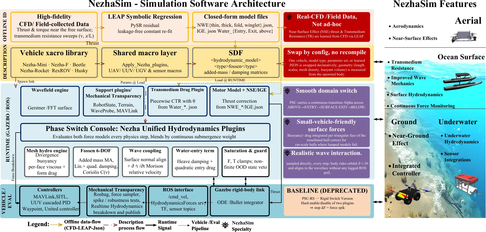
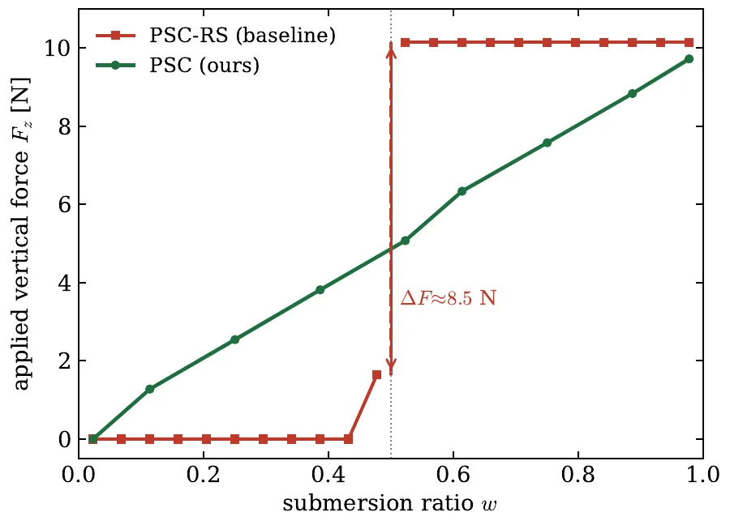
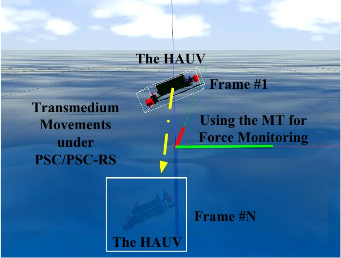
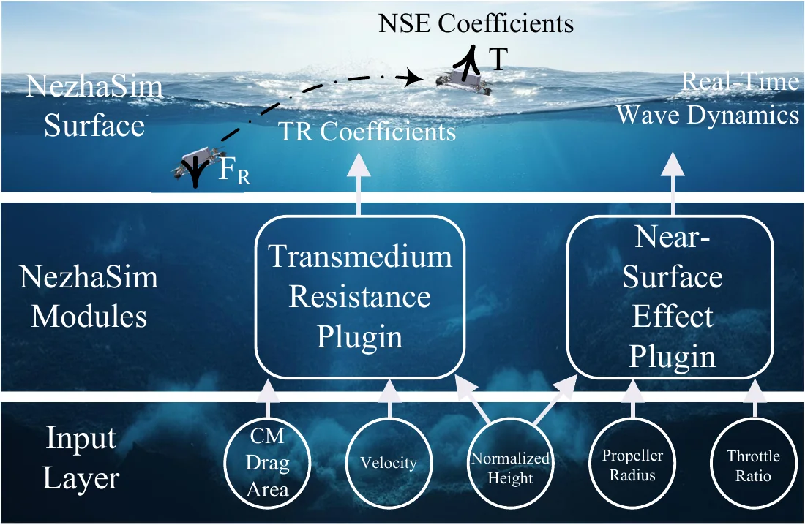
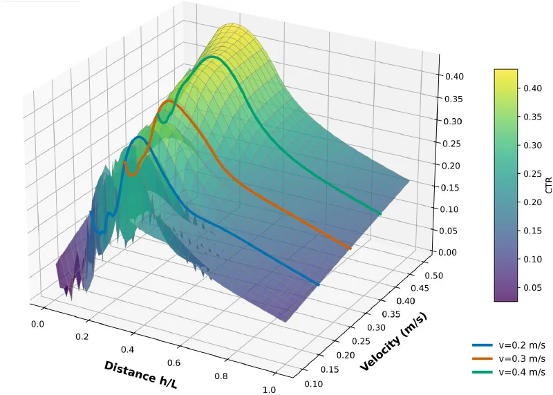
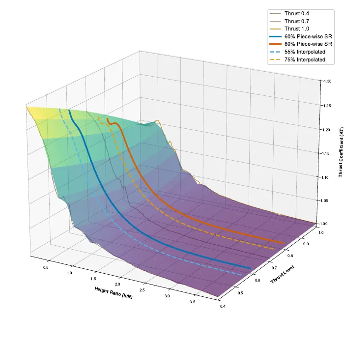
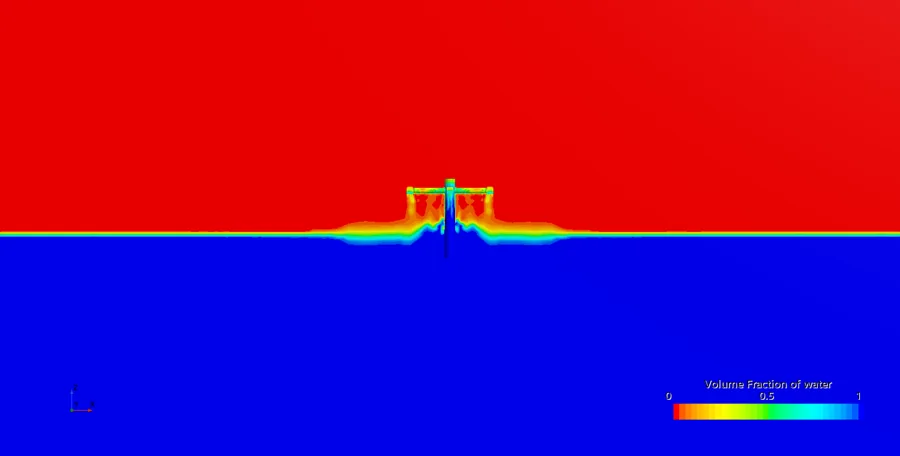

Architecture
Four single-domain simulators behind standardized force interfaces, coordinated by the Phase Switch Console, with empirical LEAP models for the effects at the waterline and Mechanical Transparency for every force.
The unified engine
NezhaSim rewrites RotorS (aerial rigid body and rotors), the UUV Simulator (six-DOF Fossen hydrodynamics), ASV-Wave (spectral waves and buoyancy grid) and the Husky simulator (ground interaction). Selected hard-to-model effects are approximated by data-derived plugins for real-time prototyping and controller validation; NezhaSim does not replace high-fidelity CFD.

Phase Switch Console (PSC)
Conventional cross-domain set-ups own the vehicle wrench in two separate plugins, a surface plugin and an underwater (Fossen) plugin, and enable one of them according to the current phase. At a crossing the two models do not agree, so the applied force jumps. The PSC replaces this with one unified hydrodynamics plugin that evaluates both models at every physics step and blends them by the signed submergence d = η − z of the body against the sampled wave surface η:
w = clamp((d + h) / (2h), 0, 1) # h: half the body height from the loaded geometry F = (1 - w) * F_surface + w * F_Fossen + F_heave
The PSC also broadcasts the environmental state, including the instantaneous wave elevation, to
every decoupled solver. This keeps the applied wrench continuous across domain boundaries and
reduces the force jumps caused by rigid switching. Rigid switching remains available as
<rigid_switching> (PSC-RS) for comparisons.


In closed loop, over 30 paired runs through waves, both arms succeed every time, but PSC-RS raises the peak MT force step at the surface crossings by a median factor of 2.9 and the peak vertical acceleration by 1.3 (Table V).
Lightweight Empirical Approximation Pipeline (LEAP)
The near-surface effect (NSE) changes rotor thrust and torque near the moving water surface; the transmedium resistance (TR) opposes the body during water entry and exit. Both act in a thin band at the surface and are expensive to compute with CFD. LEAP maps the operating condition directly to the resulting coefficient with a closed-form model:
y(x) = f_phys(x; theta(c)) + eps_SR(x) # f_phys : physical backbone (composite decay for NSE, modified Hill equation for TR) # theta(c): shape parameters, linear in the control inputs c (throttle ratio, impact velocity, ...) # eps_SR : residual fitted to what the backbone leaves
The NSE plugin receives the distance to the moving wave surface rather than the mean water level. On Nezha-Mini the LEAP queries of four rotors and the TR term take 2.2 µs per 2 ms step, the four NSE motor plugins and the TR plugin 426 µs on average, and the simulation kept a real-time factor of 0.96 or more.




The ablation in the paper (Table IV, leap/) compares LEAP
with a polynomial surrogate, the backbone alone and RBF interpolation. RBF is the most accurate inside
the data but its query cost grows with the stored samples; the benefit of the residual depends on the case.
Mechanical Transparency (MT)
Discrepancies in transmedium simulation usually come from several local effects at once. MT exposes the decoupled force components (buoyancy, damping, added mass, Coriolis, waves, transition drag) as ROS topics and services, so test scripts and developers can log and compare each one. Tutorial 4 shows the interfaces.
Replaceable dynamics
NezhaSim models rigid-body dynamics, not kinematic motion. Underwater and surface dynamics follow the six-DOF Fossen formulation (mass, inertia, added mass, linear and quadratic damping per vehicle); aerial dynamics follow the RotorS rigid-body and rotor model. Length scales, the buoyancy volume and the transition band are derived from the loaded geometry, so a new vehicle needs its own parameters but no change to internal constants.
Limitations
- Gazebo rendering is less advanced than photorealistic engines; NezhaSim suits dynamics-oriented controller validation, force-level debugging and software-in-the-loop testing better than high-fidelity perception benchmarks.
- It builds on ROS 1 simulators (RotorS, UUV Simulator) whose upstreams are no longer maintained; the PSC separates backend-specific parts so they can be replaced. A ROS 2 / PX4 version is planned.
- Scenario A uses hypothetical parameters and validates framework behavior only.